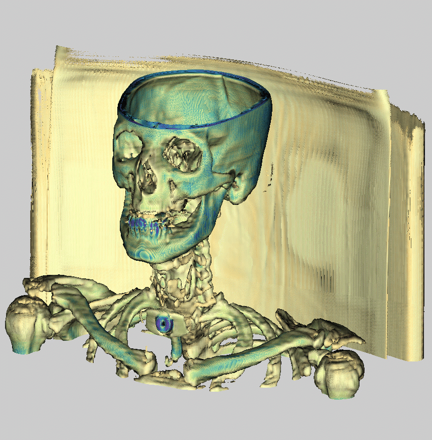
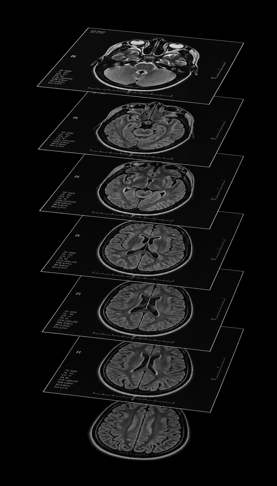

LEAP Collective 2026 · Business Case Study · Min 0:30
From MRI Scans
to 3D Surgery Maps
to 3D Surgery Maps
How a two-person bootstrapped startup used AI to change surgical planning — and what it means for your business.
↗ curiemedical.com
2
founders
$0
VC raised
AI
did the heavy lifting
The Problem
An MRI scan is not
one image.
one image.
It's a stack of hundreds of cross-sectional slices. Black and white. Flat.
A radiologist can read them. But a surgeon planning to remove a tumour surrounded by blood vessels, nerves, and bone? They study each slice one by one — mentally assembling a 3D picture that only exists in their head.
A radiologist can read them. But a surgeon planning to remove a tumour surrounded by blood vessels, nerves, and bone? They study each slice one by one — mentally assembling a 3D picture that only exists in their head.
The Hidden Burden
Reading the scan is
only half the work.
only half the work.
Surgeons also do what's called segmentation — before they can plan anything.
Trace the tumour
Map the blood vessels
Outline the bone
Identify soft tissue
Done manually. On 2D slices. Slice by slice. Hours per complex case.
And it starts from scratch for every patient.
And it starts from scratch for every patient.
Our Answer — 2020
We built Alice.
MRI scan in. 3D model out.
Alice reads the scan — which is just intensity values organised in 3D space — and generates a rotatable, zoomable anatomical model in minutes.
Give a surgeon that view before they enter the OR, and you've changed the surgery before it's started.
Give a surgeon that view before they enter the OR, and you've changed the surgery before it's started.
3D Visualisation ✓
curiemedical.com

Alice in Action
Same patient data.
Two completely different views.
Two completely different views.
Before Alice

With Alice
Where We Stood
Alice solved one problem.
Not both.
Not both.
-
✓3D Visualisation — Solved
-
✗Organ Segmentation — Still manual
Alice gave surgeons a 3D model. But it was one undifferentiated mass of anatomy — everything visible, nothing labelled.
Segmentation still had to happen the same way it always had.
Segmentation still had to happen the same way it always had.
The Bet We Made
The signal knows
what's there.
what's there.
In an MRI scan, intensity isn't random. It varies predictably by tissue type.
That signal encodes exactly what's there — we just had to teach the algorithm to read it.
That signal encodes exactly what's there — we just had to teach the algorithm to read it.
Bone
High intensity
Tumour
Irregular signal
Blood vessel
Distinct pattern
Soft tissue
Mid-range signal
We built an organ segmentation algorithm that reads those patterns and labels each region automatically.
The Result
Each organ,
automatically labelled.
automatically labelled.
Now the surgeon doesn't just get a 3D model. They get a model where every structure is a separate, isolatable group.
Isolate the tumour
Show the vascular system
Hide the bone, see underneath

Impact
Hours of manual work.
Now automatic.
Now automatic.
Before AI
- Hours tracing organs manually on 2D slices
- Segmentation redone from scratch per patient
- Mental 3D model lives only in the surgeon's head
- Complex cases require the most senior surgeon
With Alice + AI
- Segmentation runs automatically in the background
- Colour-coded, labelled 3D model ready before surgery
- Any member of the surgical team can review it
- Cognitive clarity → reduced risk in the OR
The Point
"AI didn't require us to be a big company. It required us to understand the problem."
👥
2 founders
No VC. Bootstrapped.
🧠
Domain expertise
Knew the data well enough to ask the right question.
🏥
Real-world impact
Time back for surgeons. Safety margin in the OR.
The intensity signal was sitting in every MRI scan in every hospital in the world. The algorithm just hadn't been built yet.
That's what AI looks like when you apply it to a specific, well-understood problem with real stakes. Not magic. Pattern recognition, put to work where it matters.
That's what AI looks like when you apply it to a specific, well-understood problem with real stakes. Not magic. Pattern recognition, put to work where it matters.
↗ curiemedical.com